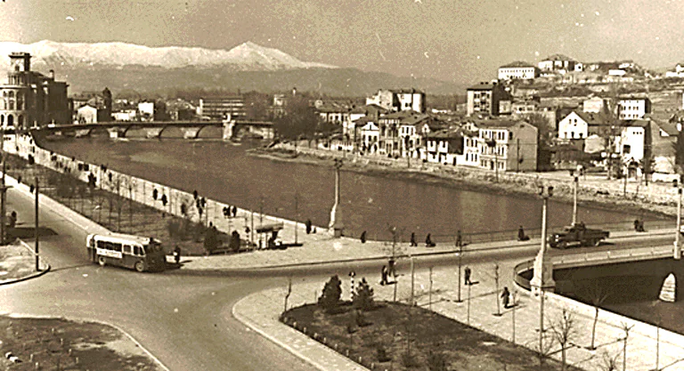
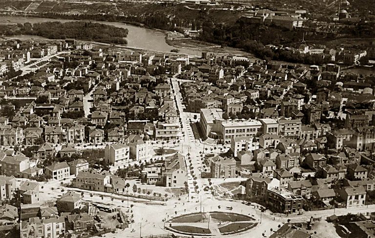
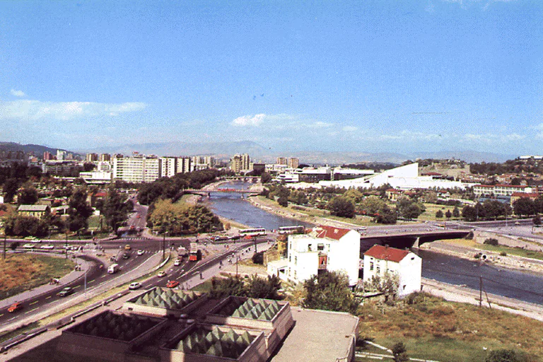

Square
- Screenplay
- Dimitrie Osmanli, Simon Drakul
- Camera
- Kiro Bilbilovski
- Year
- 1964
- Length
- 00:06

View of the city, with the Clock Tower on the right and the Gazi Isa Bey Mosque on the left, with the "Saat Kula" quarter. (the 1940s)

The Concrete Bridge by today's hotel "Grand". In the background is the Skopje fortress - Kale. (the 1950s)

Panorama of Skopje. (the 1950s)

Panorama of Skopje. In the foreground is the Concrete Bridge (by today's Grand Hotel), and in the background the Stone Bridge, the Officers' Club and the National Bank. Top right is the Skopje fortress - Kale. The quay is laid out as a promenade and a road, with greenery between them. (the 1950s)

View of the Concrete Bridge (by today's Grand Hotel). In the foreground is the Pajko quarter. In the background is the Skopje fortress - Kale, and to its right the Mustafa Pasha Mosque. (the 1950s)

Skopje, the 1950s, with new apartment buildings. In the middle is the site of today's Green Market.

Panorama of the city of Skopje. In the foreground is Freedom Square. The street towards the Vardar is "Vasil Glavinov". On the first corner of the square is the entrance of the "Goce Delčev" primary school. - the 1950s

"Sloboda" (Freedom) Square. In the background are the Officers' Club and the National Bank. - the 1950s

The centre of Skopje before the earthquake - around 1960.

Panoramic aerial shot of the central area of Skopje. The square with the Officers' Club, the National Bank and the Chamber of Commerce. On the right is the main post office, and bottom left is the roof of the National Theatre. The photograph was taken in the 1950s.

Panoramic photograph of the central area of Skopje - the 1950s

Aerial shot of the central city area before the earthquake - 1963. Between the towers (top right), where the shopping centre is today, is the Church of "Tsar Constantine and Tsarina Helena".

Panorama of part of the old Skopje bazaar, the 1950s.

View of part of the Old Bazaar and the old market. Above them is the Mustafa Pasha Mosque. (the 1950s)

View of the centre of Skopje. The Stone Bridge is still used for traffic. The photograph was taken soon after the catastrophic earthquake of 26 July 1963.

Skopje in 1968. The site of today's city shopping centre.

Panoramic photograph of the city centre. The square is still used as a car park.
(the 1960s)

Panorama of the central part of the city with the regulated Vardar, photographed from the Skopje fortress - Kale. (the 1970s). In the foreground are the Stone Bridge, the department store, "Pelister" and other buildings.

View from the Skopje fortress - Kale towards the centre of Skopje. The promenade on the right bank of the Vardar is full of people. (the 1970s)

View from the Skopje fortress - Kale towards the centre of Skopje. (the 1970s)

View of the left bank of the Vardar, right next to the Stone Bridge. At the bottom of the photograph is part of the Church of St Demetrius. (the 1970s)

View of the left bank of the Vardar, right next to the Stone Bridge. At the bottom of the photograph is part of the Church of St Demetrius. (the 1980s)

Panorama of Skopje. In the foreground is the small "Woman Fighter" park. At the bottom left are part of the City Hospital building and part of the Assembly building. - the 1980s.

The "Woman Fighter" park with the City Shopping Centre and residential and public buildings of Skopje. - the 1980s.

View of the "Goce Delčev" boulevard and bridge, with the overpass in the foreground. In the background are the Telecommunications Centre and part of the "Gradski Zid" housing complex. (the 1980s)

View of the central city area. In the foreground are some of the banks, the "Revolucija" bridge and the theatre. In the background are the Concrete Bridge, the Stone Bridge and the Telecommunications Centre - the 1980s.

View of the central city area from the roof of today's Finance Institute. In the distance is the Stone Bridge. On the right of the postcard is today's theatre, and above it the Skopje fortress - Kale can be made out - the 1980s.

Skopje at the end of the 1970s. The bridge by today's hotel "Grand". On the left rises the Macedonian Radio and Television building, and on the right the building of today's Payment Operations Institute.

Panorama of Skopje from the slope of Mount Vodno. In the foreground is the hotel "Panorama". (the 1980s)

Panorama of Skopje at night, from the slopes of Mount Vodno. (the 1980s)

 Aqueduct4 postcards
Aqueduct4 postcards Kale30 postcards
Kale30 postcards Bridges60 postcards
Bridges60 postcards Quay58 postcards
Quay58 postcards Square46 postcards
Square46 postcards Buildings66 postcards
Buildings66 postcards Christian churches19 postcards
Christian churches19 postcards Muslim buildings33 postcards
Muslim buildings33 postcards Officers' Club29 postcards
Officers' Club29 postcards Theatre28 postcards
Theatre28 postcards Railway station13 postcards
Railway station13 postcards Schools36 postcards
Schools36 postcards Parks12 postcards
Parks12 postcards Markets18 postcards
Markets18 postcards Streets38 postcards
Streets38 postcards Panorama I60 postcards
Panorama I60 postcards Panorama II30 postcards
Panorama II30 postcards Collages55 postcards
Collages55 postcards Floods9 postcards
Floods9 postcards Earthquake27 postcards
Earthquake27 postcards Skopje 200026 postcards
Skopje 200026 postcards